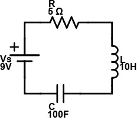

This page is currently under construction. Please view this project on GitHub.
An RLC circuit is a circuit that contains resistive (R), inductive (L), and capacitive (C) elements. The inductive and capacitive elements of the circuit cause the current around the loop to oscillate. The resistive element of the circuit attenuates the oscillations, decreasing their magnitude over time.
